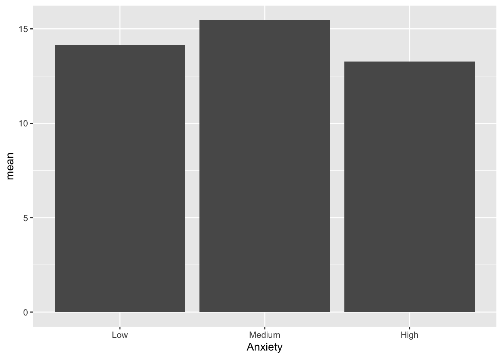

Learning_TR <- tribble(~Difficulty, ~Anxiety, ~Score,
"Low", "Low", 18,
"Low", "Low", 17,
"Low", "Low", 20,
"Low", "Low", 16,
"Low", "Low", 17,
"Low", "Medium", 18,
"Low", "Medium", 18,
"Low", "Medium", 19,
"Low", "Medium", 15,
"Low", "Medium", 17,
"Low", "High", 18,
"Low", "High", 17,
"Low", "High", 16,
"Low", "High", 18,
"Low", "High", 19,
"Medium", "Low", 18)More with Databases
More on creating Databases
On the Moodle website download the pdf file Anxiety and Learning example
Step 1 - Identify variables
Variable 1 = Anxiety
Variable 2 = Learn new material
Variable 3 = Difficulty of new material
Step 2 - What kind of variables?
Anxiety = categorical -> ordinal
- Anxiety is a categorical variable because it’s different groups of persons based on the presence of anxiety, but there is an order based on the amount of anxiety (Low, Medium, High), thus it is ordinal.
Difficulty of new material = categorical -> ordinal
- Just like anxiety, difficulty of new material is a categorical variable because it’s different groups of persons based on the difficulty of the material, but there is an order to the level of difficulty (Low, Medium, High), this it is ordinal
Ability to learn new material = numeric -> ratio
- Ability to learn new material is numeric because it is the variable being measured (based on how much material is learned out of a possible 20). Since it has an absolute zero point (there are no negative numbers) and it’s possible to talk about a score being twice as good as another it is a ratio scale.
Step 3 - How do I get it into R Studio?
The first example we’ll look at as a Tibble. A tibble is helpful because you can set it up like a normal spreadsheet. Use a ~ to tell R which words are the names for your variables. For each variable make sure you don’t have any spaces. All variables and objects should not contain a space between words. Choose a single word for your variables or use an _. Remember that each row should be an observation and each column should be a variable. Here’s how you would set it up (It’s incomplete, but you get the general idea).
Another way to create this kind of dataset is to use the repeat function rep. But remember you need to slightly different patterns to include each observation based on the different ordinal variables.
Learning <- data.frame(
Difficulty =
c(rep(c("Low", "Medium", "High"), each = 15)),
Anxiety =
c(rep(c("Low", "Medium", "High"), times = 5)),
Score =
c(18, 18, 18, 17, 18, 17, 20, 19, 16,
16, 15, 18, 17, 17, 19, 18, 18, 14,
14, 17, 15, 17, 18, 17, 16, 15, 12,
14, 14, 16, 11, 15, 9, 6, 12, 8, 10,
13, 7, 10, 11, 8, 8, 12, 5))
Learning Difficulty Anxiety Score
1 Low Low 18
2 Low Medium 18
3 Low High 18
4 Low Low 17
5 Low Medium 18
6 Low High 17
7 Low Low 20
8 Low Medium 19
9 Low High 16
10 Low Low 16
11 Low Medium 15
12 Low High 18
13 Low Low 17
14 Low Medium 17
15 Low High 19
16 Medium Low 18
17 Medium Medium 18
18 Medium High 14
19 Medium Low 14
20 Medium Medium 17
21 Medium High 15
22 Medium Low 17
23 Medium Medium 18
24 Medium High 17
25 Medium Low 16
26 Medium Medium 15
27 Medium High 12
28 Medium Low 14
29 Medium Medium 14
30 Medium High 16
31 High Low 11
32 High Medium 15
33 High High 9
34 High Low 6
35 High Medium 12
36 High High 8
37 High Low 10
38 High Medium 13
39 High High 7
40 High Low 10
41 High Medium 11
42 High High 8
43 High Low 8
44 High Medium 12
45 High High 5Let’s check out our variables using the str command
str(Learning)'data.frame': 45 obs. of 3 variables:
$ Difficulty: chr "Low" "Low" "Low" "Low" ...
$ Anxiety : chr "Low" "Medium" "High" "Low" ...
$ Score : num 18 18 18 17 18 17 20 19 16 16 ...Notice our two ordinal variables are listed as chr, which stands for character and our ratio variable is listed as num which stands for numeric or number.
The only thing missing is making our two ordinal variables factors. A factor allows us to show a character variable based on a specific order, so they can actually be ordinal and not just words or strings. There are two ways to do this.
First define the levels of your factor variable.
Levels <- c("Low", "Medium", "High")Then change the variable itself using the object Levels to define the order of your factor variable.
Learning$Difficulty <- factor(Learning$Difficulty,
levels = Levels)You can also define the levels in the code to create a factor in one step like this example using the Anxiety variable.
Learning$Anxiety <- factor(Learning$Anxiety,
levels = c("Low", "Medium", "High"))Now check out the structure with the adjustments you’ve just made to your dataset. It should now identify Anxiety and Difficulty as factors.
str(Learning)'data.frame': 45 obs. of 3 variables:
$ Difficulty: Factor w/ 3 levels "Low","Medium",..: 1 1 1 1 1 1 1 1 1 1 ...
$ Anxiety : Factor w/ 3 levels "Low","Medium",..: 1 2 3 1 2 3 1 2 3 1 ...
$ Score : num 18 18 18 17 18 17 20 19 16 16 ...Bar graph
To create a bar graph we need to do a little more work since this will be based on one of our measures of central tendency, the mean, because count or number won’t tell us much about the variables.
So we need to use the pipe again |> and something new, the summarize function summarise. Summarise allows us to calculate various measurements of central tendency, variation, and others. Then we can use those numbers in a graph.
Learning_Mean <- Learning |>
group_by(Anxiety) |>
summarise(n = n(),
mean = mean(Score))
Learning_Mean# A tibble: 3 × 3
Anxiety n mean
<fct> <int> <dbl>
1 Low 15 14.1
2 Medium 15 15.5
3 High 15 13.3Next Let’s create the bar graph using the Anxiety variable and mean score from the new dataset.
ggplot(data = Learning_Mean) +
geom_bar(mapping = aes(x = Anxiety,
y = mean), stat = "identity" )